Christian Alex
UX/UI Designer
Um dispositivo digital que auxilia adolescentes com TDM (Transtorno Depressivo Maior), aliado ao conceito do design emocional, busca estimular o usuário na prática de atividades cognitivas e interações sociais. Foi desenvolvido durante meu curso de graduação onde resultou na produção de um artigo.
Introdução
Dos casos de depressão na sociedade, aqueles ocorridos no período da adolescência mostram-se mais frequentes devido às alterações biológicas, psicológicas e sociais aos quais os adolescentes estão submetidos.Este projeto delimita-se ao estudo em que se propõe o desenvolvimento de dispositivo digital que amenize os efeitos do TDM (Transtorno Depressivo Maior) de grau leve em adolescentes, buscando-se a reinserção social e prevenção do agravamento da doença através do uso de princípios de Interação Homem Computador e Ergonomia Afetiva.
Objetivo 1: Amenizar os efeitos do TDM
Objetivo 2: Promover as relações sociais
Objetivo 3: Prevenir o agravemento
Objetivo 4: Aplicar a Hedonomia
Método Utilizado
Imersão
Ideação
Prototipação
Durante a etapa de Imersão preliminar foram realizadas as pesquisas
bibliográficas e documental, a fim de se adquirir uma base teórica através de autores
especialistas no assunto. A partir da Imersão em profundidade foram determinados os agentes
participativos na vida de um adolescente com TDM (Transtorno Depressivo Maior) de grau
leve e através disso foram aplicados os procedimentos de pesquisa.
Com a técnica netnografia um questionário estruturado foi aplicado especificamente com dez adolescentes
diagnosticados com TDM de grau leve, para mapeamento dos efeitos pós-crise (curto, médio,
longo, prazo, perspectiva do portador, da família, de profissionais, dos amigos) e hábitos de
utilização de objetos interativos digitais.

Exemplo do form aplicado
Posteriormente, com grupo focal de três adolescentes de diferentes idades foram abordados temas como: nível de relacionamento interpessoal
(familiares, colegas, amigos, melhores amigos, namorados e pessoas desconhecidas) e
reforçadas as temáticas de origem da doença em cada paciente e seus efeitos. Foram ainda
realizadas entrevistas com dois grupos definidos como fatores relevantes na vida dos
adolescentes. A entrevista estruturada com 3 profissionais da área de psicologia e psiquiatra a
fim de se obter dados de tratamentos alternativos, recomendações normalmente feitas após o
diagnóstico de casos de transtornos e fatores que agravam o transtorno.
E por fim foi realizada uma entrevista estruturada com o público de modo geral (em torno de 30 pessoas, sendo elas
familiares e não familiares dos adolescentes com depressão), a fim de fazer um levantamento
a partir da perspectiva do transtorno depressivo e seus níveis de conhecimento em torno do
assunto.
Análise dos dados
Como resultado do questionário online com os adolescentes foi possível entender que:
Como resultado da entrevista com o público em geral foi possível entender que:
Grupo focal
A partir do grupo focal foi possível entender que as origens dos transtornos apresentados são de fatores diferentes, sendo eles: bullying, agressão familiar, e
relacionamento amoroso. Fica claro que todos apresentaram mudanças bruscas de
comportamento após o ocorrido e através do diagnóstico foi possível definir o que deveria ser
feito como tratamento. Todos foram diagnosticados com TDM de grau leve, mas apenas um
deles se mantém no tratamento, os outros não tiveram interesse por não querer “preocupar os
familiares”.
Todos apresentaram baixa autoestima e distúrbios alimentares, não se sentem
satisfeitos com o próprio corpo devido ao transtorno. Relatou-se que o esse mal além de ser
6
periódico e ocioso, não pode ser previsto, pois não há um motivo específico para gerar um
estado melancólico, logo os adolescentes estão propícios a sentir os efeitos da depressão a
qualquer momento. Dos três casos há pensamentos frequentes em relação a suicídio,
proveniente da insatisfação dos seus sentimentos e da falta de interesse em quaisquer
atividades cotidianas, entretanto não se relatou tentativas de suicídio.
Visando a implementação de um dispositivo digital como
solução do projeto foram aplicados os conceitos de usabilidade e ergonomia emocional na sua
construção e foi definido o quadro de atributos projetuais, visto que eles atendem as
necessidades de caráter de auto realização. Através do uso da técnica de brainstorming aliado
à síntese dos dados gerados pelas etapas de imersão e a co-criação acompanhado de
adolescentes com transtorno depressivo, foi possível gerar alternativas para a temática, e com
o uso dos cartões de insight, foram filtradas as ideias geradas e as possíveis soluções foram
organizadas por categorias específicas, por fim são somadas aos critérios norteadores.
Com o
auxílio de uma matriz de posicionamento foi possível analisar as melhores alternativas para se
desenvolver para cada persona e elaborar um protótipo. Os critérios estabelecidos para o
projeto são aqueles que proporciona ao projeto o foco do qual lhe foi concebido no início da
sua produção, através dele se torna visível quais fatores tem maior peso e o quanto precisa ser
solucionado. O termo persona se aplica ao uso de personagens fictícios que apresentam o
mesmo padrão de comportamento das principais pessoas envolvidas no problema, neste
projeto foram utilizadas três diferentes, uma representa o adolescente com TDM, outro
representa um familiar (o pai) e a outra uma pessoa do ciclo social (amiga)
Identidade
A sua interface deve proporcionar através do uso de formas de arredondadas o uma interface acolhedora, juntamente com o uso das cores de tons claros e suaves, criando assim um aspecto visual simples e afetuoso.
Logo Uni
Funções da solução
Nesta etapa foi criada as soluções de acordo com as necessidades dos adolescentes. Abaixo a lista das funções gerais encontradas:
- Sociabilizar;
- Estimular na prática de atividades físicas;
- Interagir com o usuário;
- Monitorar o usuário;
Sociabilizar
Para estimular o engajamento do usuário com o dispositivo, é possível utilizar os pontos adquiridos com o uso para trocar por skins que podem ser usadas pelo personagem.
Skins desenhadas para o personagem
Estimulação na prática de atividades
Com o uso da função no menu “Fitness”, o dispositivo apresentará funções ao usuário como “Caminhar”, “Meditar”, “Polichinelos”, e etc. Haverá momentos aleatórios onde o usuário receberá sugestões em horários alternados, com frases do personagem como: “que tal cuidar da pele hoje?”. Tais sugestões podem ser aceitas, entretanto, por não serem monitoras pelo personagem ela não resultará em grandes quantidades de pontos de amizade.
Exemplo de função "Caminhar"
Interagir com o usuário
O personagem do dispositivo irá responder aos comandos por voz do usuário através de expressões similares aos emojis, visto em que, são utilizados comumente entre o público alvo. E também terá a possibilidade de acumular pontos e através desses será possível adquirir novas aparências para o personagem.
Veja também outros projetos

Uni
Projeto Universitário
Um dispositivo digital que auxilia adolescentes com TDM (Transtorno Depressivo Maior), aliado ao conceito do design emocional, busca estimular o usuário na prática de atividades cognitivas e interações sociais.

Amor de Bicho
Estudo de Caso
Uma concepção de produto digital que serve como central para ONG's de adoção de animais, possibilitando que haja anúncios, acompanhamento veterinário e dashboard de dados para ONG's.